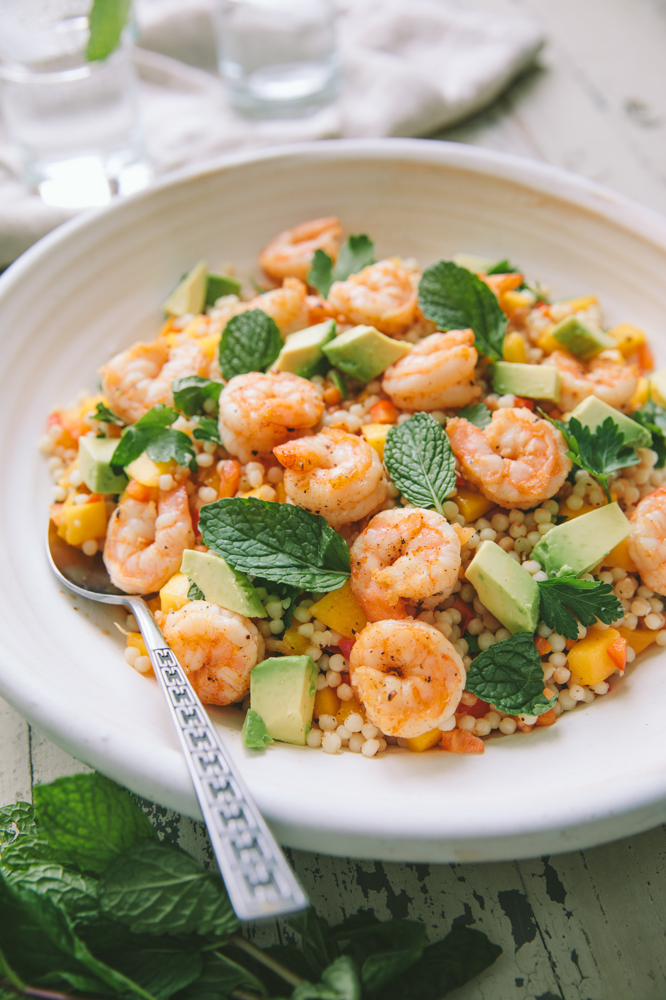

Shrimp Couscous Salad

Description:
For a beautiful, flavorful cold salad and a wonderful variation from the standards, try this easy and delicious couscous. Shrimp and tomatoes are tossed with couscous and feta cheese, then dressed in a garlic vinaigrette. Always a hit, and never goes to waste.
Ingredients:
- 2 cups couscous
- 2 cups water
- ¾ cup olive oil
- ¼ cup apple cider vinegar
- 1 teaspoon Dijon mustard
- 1 teaspoon ground cumin
- 1 clove garlic, crushed
- salt and pepper to taste
- 1 red bell pepper, chopped
- 1 yellow bell pepper, chopped
- 1 ½ pounds cooked shrimp, peeled and deveined
- 2 medium tomatoes, chopped
- 1 cup chopped fresh parsley
- 1 cup crumbled feta cheese
Steps:
- Pour water into a saucepan, and bring to a boil. Stir in couscous, cover, and remove from heat. Let stand for 5 minutes, then immediately fluff with a fork. (otherwise it will clump). Set aside to cool.
- In a small bowl, whisk together the olive oil, cider vinegar, Dijon mustard, garlic, salt and pepper. Set aside.
- In a large salad bowl, toss together the shrimp, cooled couscous, red and yellow bell peppers, tomatoes, parsley and feta cheese. Whisk vinaigrette to blend, then pour in about half of it over the couscous. Toss to coat, and add more dressing to coat thoroughly without drenching. Refrigerate at least 2 hours before serving.
go back